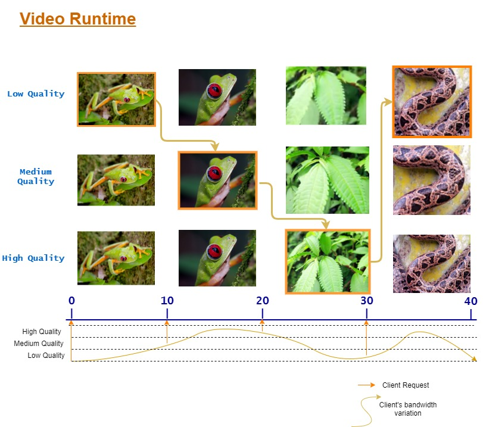
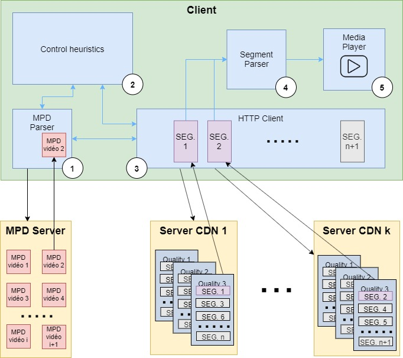
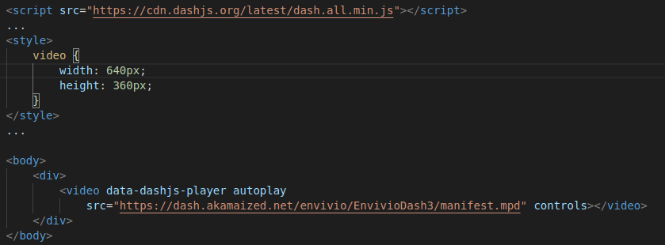

Protocol Presentation
MPEG-DASH

Dynamic Adaptive Streaming over HTTP, or MPEG-DASH is an adaptive streaming for media
content on internet.
It is an international standard since November 2011, created by the Moving Picture Experts
Group (MPEG) with the collaboration of almost a dozen organizations.
It is based on the derivation of content in several versions having distinct quality and
characteristics and then cut into short segments.
A manifest file in .xml format (the Media Presentation Description (MPD)) gives the client
the information necessary to request each segment individually from conventional HTTP web
servers.
The behavior of the client isn’t normalized, this way the provider of the service can adapt
it to its needs.
In practice, the choice of an adaptive bitrate streaming is ever done, so the selection of
each segment is done by the client while the content is being played by choosing the maximum
bit rate that avoids stalls or rebuffering events.
This method adapts the stream to the network conditions when changing, and provides high
quality streaming. The use of HTTP makes possible to rely on the existing web infrastructure
and the existing network libraries on devices connected to the Internet.
The main advantage of using MPEG-DASH is the quality it provides, while the main
disadvantage is that it is not natively supported by some browsers and devices like
IE<11 or iOS.
Protocol stack

The protocol stack of MPEG-DASH can be divided into two possibilities: one connected and one
not connected.
The network layer is the same for both possibilities: IP. It is on the transport layer that
the protocol stack splits in two:
- The connected version uses TCP as transport layer, followed by TLS 1.2 for the security
layer and finally HTTP/2 for the application layer.
- The non-connected version uses UDP as transport layer, combined with QUIC which extends
itself from the transport layer to the application layer, which is shared with HTTP/2 API.
For more information about IP, TCP, UDP, TLS, find it in the different RFCs:
Media Presentation Description

Media Presentation Description (or MPD) is an XML document containing information about the data
segments. It is divided into multiple parts:
- A period ID: determines the type of information (audio, video, subtitle)
- An adaptation set: determines the quality and bitrate of the segment
- A representation: contains all the segment information
- A segment information: contains the URL of each segment and provides additional information about the segment in itself (beginning time, end time, …)
General Fonctionment

Playback of content via MPEG-DASH is as follows:
First, the client requests the Media Presentation Description (MPD) associated with the desired content from the MPD server and receives it. This MPD is parsed by the client and provides it with the data necessary for the acquisition and processing of the segments.
Everything is supervised by a heuristic control.
The HTTP client then begins to request one by one the segments from the servers concerned, taking into account the network conditions for the choice of bit rate and quality in order to get the higher quality and bit rate possible avoiding stalls or rebuffering.
The segments are parsed using a segment parser.
The segments are finally played by the player.
An important point is that the following segments are requested, received and processed while playing the previous ones. This allows to display the content without interruption and to adapt in real time to the network.
Use Cases
MPEG-DASH can be use in many cases. Here are a few examples:
- On-Demand, Live and time-shift streaming
- Delivery of same content on many screens
- Delivery of any multimedia content (2D, graphics, subtitles, text, etc.)
- Support of multiple languages and different audio configuration
Existing projets
- Dash.js (framework for building video and audio players that play back MPEG-DASH content using client-side JavaScript libraries)
- Shaka (open source dash player from Google)
- Libdash (open-source library to use MPEG-DASH standard)
- Bitmovin (Live or on-demand transcoding of video and web-based MPEG-DASH players in HTML5 or Flash)
Demonstration
HowTo
Server Part Deployment
Prerequisities
You will need ffmpeg, which is a tool for handling video, audio, and other multimedia files
and streams.
Have a look to their website for more information: https://www.ffmpeg.org
Download and install ffmpeg with:
sudo apt-get install ffmpeg
If you want to make it locally, make sure you have an HTTP server installed on your computer, as
Apache2.
Create MPD file and DASHable segments
Go into your working directory:
serverVideo
cd serverVideo
Paste your file in.video (the video you want to dash) into the folder serverVideo.
Create the audio file with this command:
ffmpeg -i in.video -vn -acodec libvorbis -ab 128k -dash 1 my_audio.webm
Create then the dashable segment in different qualities:
ffmpeg -i presentation-filiere-telecommunications.mp4 -c:v libvpx-vp9 -keyint_min 150 \
-g 150 -tile-columns 4 -frame-parallel 1 -f webm -dash 1 \
-an -vf scale=160:90 -b:v 250k -dash 1 video_160x90_250k.webm \
-an -vf scale=320:180 -b:v 500k -dash 1 video_320x180_500k.webm \
-an -vf scale=640:360 -b:v 750k -dash 1 video_640x360_750k.webm \
-an -vf scale=640:360 -b:v 1000k -dash 1 video_640x360_1000k.webm \
-an -vf scale=1280:720 -b:v 1500k -dash 1 video_1280x720_1500k.webm
With this command line, you don't fragment the video, but you create 5 videos in different
formats. Check the options available in ffmpeg to see the fragmentation.
Create the MPD file:
ffmpeg \
-f webm_dash_manifest -i video_160x90_250k.webm \
-f webm_dash_manifest -i video_320x180_500k.webm \
-f webm_dash_manifest -i video_640x360_750k.webm \
-f webm_dash_manifest -i video_1280x720_1500k.webm \
-f webm_dash_manifest -i my_audio.webm \
-c copy \
-map 0 -map 1 -map 2 -map 3 -map 4 \
-f webm_dash_manifest \
-adaptation_sets "id=0,streams=0,1,2,3 id=1,streams=4" \
my_video_manifest.mpd
Player Part Deployment
Prerequisities
We used the library DashJS to settle our dash player. Have a look on their GitHub.Integrate a dash player in your website
You can integrate the dash player simply by adding those lines (in an html file):
Thanks to DashJS library, you can modify option of the dash player, have a look to our demo in our GitHub.